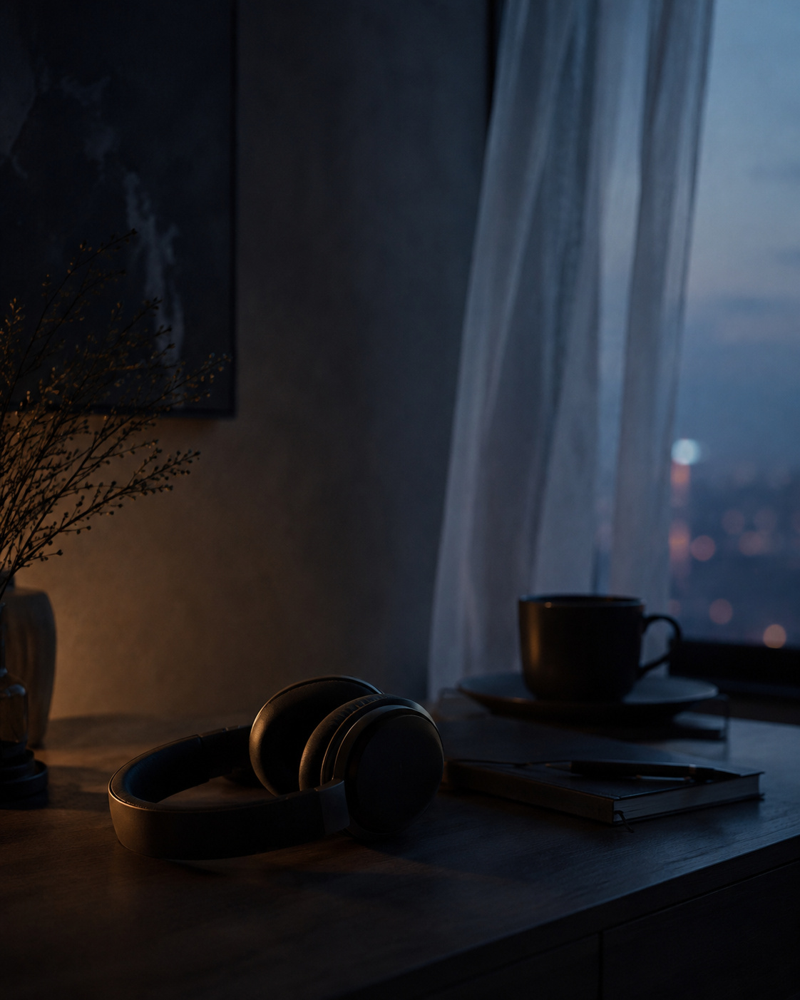
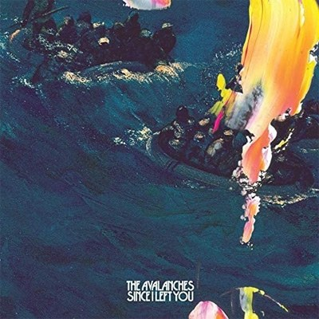

01
歩くとき
いつもの道を、映画のワンシーンのように感じさせてくれる音楽。歩幅とリズムが重なると、目的地までの時間さえ作品の一部になる。
MY FAVORITE THING
音楽は、景色の見え方を
少しだけ変える。
朝の電車、ひとりで歩く夜、
何もしたくない午後。
同じ景色でも、流れている音楽によって
少し違って見える。
私にとって音楽は、気分を変えるためのものではなく、
今いる場所の感じ方を変えてくれるものです。
02 / EVERYDAY SCENES
音は、時間に輪郭を与える。
同じ一日を、少し違う一日にする。
01
いつもの道を、映画のワンシーンのように感じさせてくれる音楽。歩幅とリズムが重なると、目的地までの時間さえ作品の一部になる。

02
言葉にならない感情を、急いで答えに変えずに置いておける音楽。思考の隙間に音が入り込み、絡まった気持ちをゆっくりほどいていく。
03
沈黙の代わりに、静かにそばにいてくれる音楽。何かを始めなくてもいい時間を、そのまま肯定してくれる。
03 / SOUNDS THAT SHAPED ME
いま聴きたい感覚を選んでください。
景色の温度が、静かに切り替わります。
A SOFT DRIFT THROUGH THE CITY
FEELING 01
身体が少し軽くなり、景色の中を漂うように感じる音。現実から離れるのではなく、現実との距離をほんの少しだけ広げてくれる。
ARTISTS & ALBUMS IN THIS FEELING
Hiatus Kaiyote
Choose Your Weapon
The Avalanches

Since I Left You
04 / THE REASON
音楽は、答えを教えてくれるわけではありません。
それでも、言葉にできなかった感情に形を与えてくれます。
嬉しいときだけでなく、迷っているときや何も考えたくないときにも、音楽はその時間を否定せずに受け止めてくれます。
05 / VISUAL NOTES
記憶に残るのは、曲名だけではない。
そのとき見ていた光や、空気の温度も残っている。
知らない街でも、好きな曲が流れると少しだけ自分の場所になる。
雨音と低いベースが重なる夜。
何もしない時間にも、名前がつく。
帰り道が、今日いちばん長く続けばいいと思う。
06 / SHORT FILM
映像の中では、何も大きなことは起こらない。
ただ、音楽と時間だけが流れていく。
07 / AFTER THE SOUND
好きな音楽は、これからも変わっていくと思います。けれど、音楽によって見慣れた景色が少し違って見えた瞬間は、これからも自分の中に残り続けます。
音楽は、景色の見え方を
少しだけ変える。